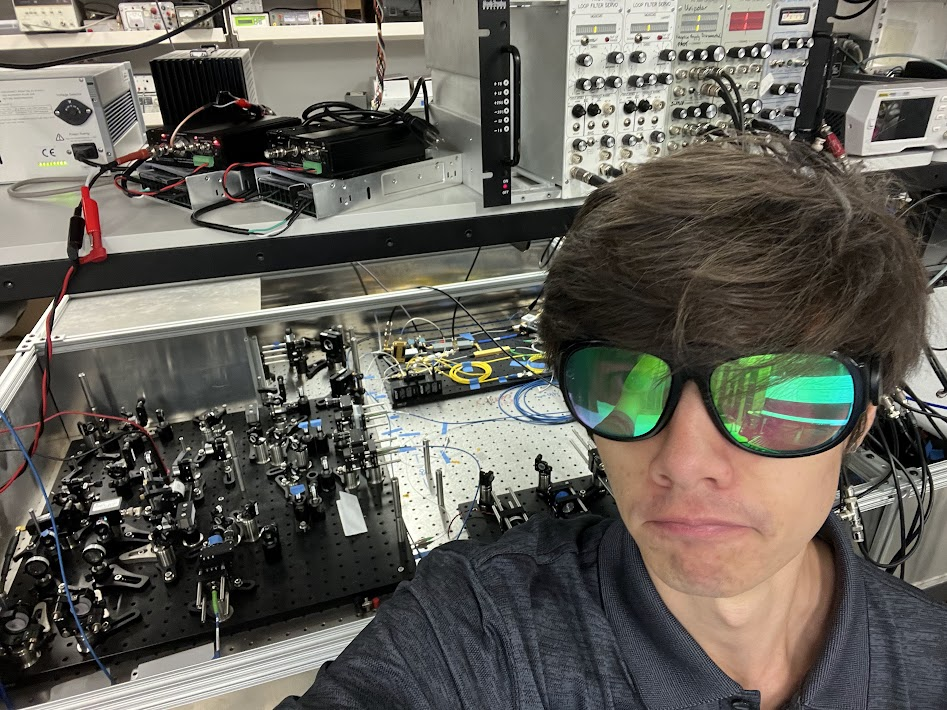
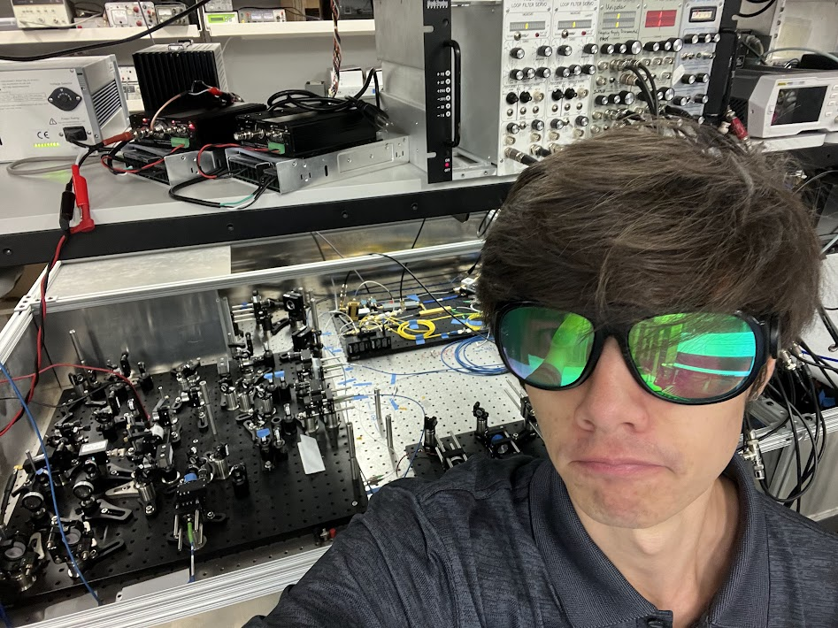

Electronics for quantum transduction and entanglement!
 

This page showcases some electronics I made while working for the National Institute of Standards
and Technology during 2022(entanglement) and 2023(transduction). I focused largely on optics during
these periods but also made some neat devices!
On the picure on the right I'm wearing a pair of 512nm reflective and 1024nm absorbtive (those
are light wavelengths) glasses which cost $2000! Worth it to prevent being blinded by a
laser!
In 2022, I worked on NIST's Bell Test. An experiment to test quantum entanglement
principals. We were using it to generate super duper perfect random numbers. Our setup quantum entangled
individual photons based on their polarity and sent them to opposite sides of the lab to be measured for
quantum phenomena.
This little circuit I made controls the remotely controls the driver for the high speed polarization switch
component called a Pockels Cell. My device allows a user to output a high-resolution analog voltage (among
other functions) to control the angle of photon polarization. Remote operation is achieved with a custom
webserver and an ESP, meaning that the experiment can be operated completely remotely with my little box!
(Yes the sides of the box are made of custom PCBs)
Me at the Bell Test entanglement generator / photon transmitter.
A small circuit I whipped up which uses two op-amps, some IQ mixers, and some filters and attenuators to properly mix high frequency signals to control a microwave laser circuit. (complicated signal stuff)
Here's a short video of my electronics as implemented in the experimental setup.
That noise in the background is our pulse tube refrigerator keeping the experiment at
~6 degrees
kelvin!

I made this device to add two voltages, one with ~17db gain and generate a signal based off the sum. This signal varies in frequency based off the voltage, outputting an ~500MHz sine wave. This signal was used to drive an acousto-optic modulator, which lets you change a laser's wavelength.
This pattern is from a camera and is actually what the "tip" of the laser beam looks like!
In 2023, I worked on a project focused on quantum transduction and optical networking of superconducting quantum computers. Basically, quantum computers need to work at like, millikelvin temperatures, so they're all in sealed refrigerators and can't send signals to other quantum computers. Our project would transduce the microwave signal in the quantum computer to an optical signal, which could leave the fridge and be sent to another quantum computer! Communication!